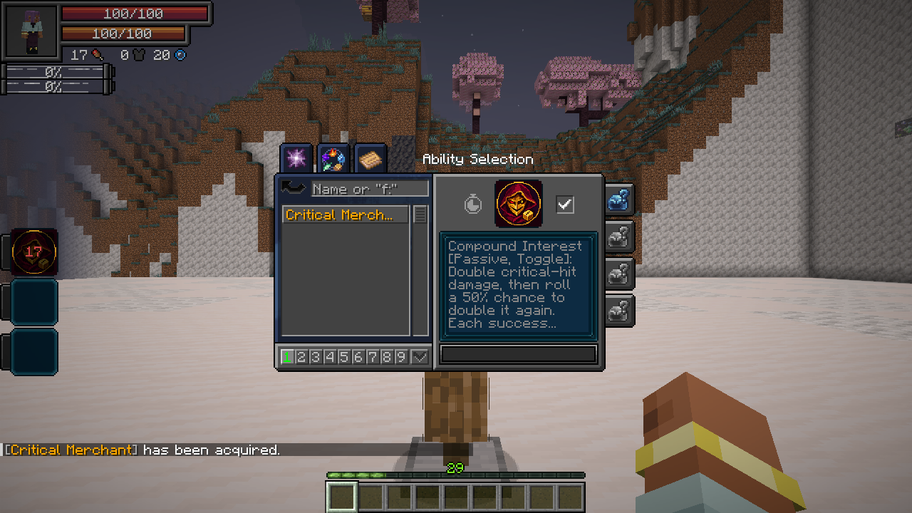
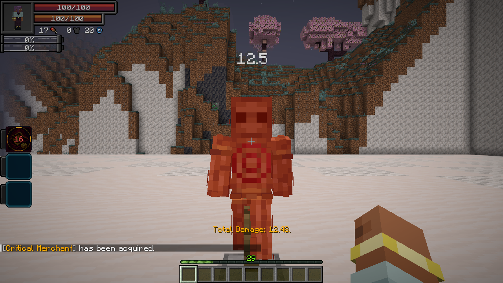

Compound Interest · Passive, Toggle
Every critical hit receives a guaranteed ×2 damage bonus. It then has a 50% chance to double again. Every success permits another 50% roll; the chain ends on its first failure, after at most 100 additional rolls.
Each critical starts a fresh chain. Before defenses, a 100-damage critical becomes 200, then 400 after one successful roll, then 800 after two.
Enable the passive through Tensura’s Skills → Unique checkbox. Damage type: the original attack’s type. Normal armor, resistances, barriers and other defenses still apply.
Guaranteed Profit · Active, Press
Spend 1,000 magicules to make your next ten landed hits critical hits. Cooldown: 20 seconds. Recasting refreshes the count to ten; it does not stack. The native skill mode shows the remaining hits.
This works independently of the passive. Toggle Compound Interest on to amplify those criticals. Native melee, owned projectiles and abilities are supported, including direct spiritual damage. Each damaged target counts as a hit. Misses, fully blocked hits and immune targets do not spend a guarantee; Tensura training-dummy damage counts.
Unbound’s existing guaranteed criticals retain one base critical multiplier. Guarantees clear on death or forgetting the skill. Damage type: none directly; affected attacks retain their normal types.

Fettered Human: excluded from its reincarnation rolls because the active costs magicules.